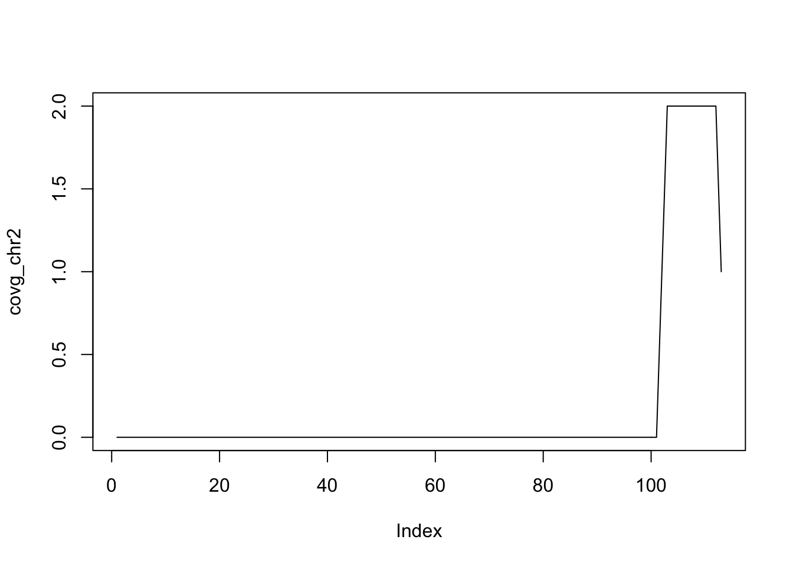

Genomic ranges are a way of describing regions on the genome (or any other linear object, such as a transcript, or even a protein). This functionality is typically found in the GenomicRanges package.
library(GenomicRanges)To get going, we can construct a GRanges object by hand as an example.
gr <- GRanges(
seqnames = Rle(c("chr1", "chr2", "chr1", "chr3"), c(1, 3, 2, 4)),
ranges = IRanges(101:110, end = 111:120, names = head(letters, 10)),
strand = Rle(strand(c("-", "+", "*", "+", "-")), c(1, 2, 2, 3, 2)),
score = 1:10,
GC = seq(1, 0, length=10))
gr## GRanges object with 10 ranges and 2 metadata columns:
## seqnames ranges strand | score GC
## <Rle> <IRanges> <Rle> | <integer> <numeric>
## a chr1 101-111 - | 1 1
## b chr2 102-112 + | 2 0.888888888888889
## c chr2 103-113 + | 3 0.777777777777778
## d chr2 104-114 * | 4 0.666666666666667
## e chr1 105-115 * | 5 0.555555555555556
## f chr1 106-116 + | 6 0.444444444444444
## g chr3 107-117 + | 7 0.333333333333333
## h chr3 108-118 + | 8 0.222222222222222
## i chr3 109-119 - | 9 0.111111111111111
## j chr3 110-120 - | 10 0
## -------
## seqinfo: 3 sequences from an unspecified genome; no seqlengthsThe GRanges class represents a collection of genomic ranges that each have a single start and end location on the genome. It can be used to store the location of genomic features such as contiguous binding sites, transcripts, and exons. These objects can be created by using the GRanges constructor function. The following code just creates a GRanges object from scratch.
This creates a GRanges object with 10 genomic ranges. The output of the GRanges show() method separates the information into a left and right hand region that are separated by | symbols. The genomic coordinates (seqnames, ranges, and strand) are located on the left-hand side and the metadata columns are located on the right. For this example, the metadata is comprised of score and GC information, but almost anything can be stored in the metadata portion of a GRanges object.
The components of the genomic coordinates within a GRanges object can be extracted using the seqnames, ranges, and strand accessor functions.
seqnames(gr)## factor-Rle of length 10 with 4 runs
## Lengths: 1 3 2 4
## Values : chr1 chr2 chr1 chr3
## Levels(3): chr1 chr2 chr3ranges(gr)## IRanges object with 10 ranges and 0 metadata columns:
## start end width
## <integer> <integer> <integer>
## a 101 111 11
## b 102 112 11
## c 103 113 11
## d 104 114 11
## e 105 115 11
## f 106 116 11
## g 107 117 11
## h 108 118 11
## i 109 119 11
## j 110 120 11strand(gr)## factor-Rle of length 10 with 5 runs
## Lengths: 1 2 2 3 2
## Values : - + * + -
## Levels(3): + - *Note that the GRanges object has information to the “left” side of the | that has special accessors. The information to the right side of the |, when it is present, is the metadata and is accessed using mcols(), for “metadata columns”.
class(mcols(gr))## [1] "DataFrame"
## attr(,"package")
## [1] "S4Vectors"mcols(gr)## DataFrame with 10 rows and 2 columns
## score GC
## <integer> <numeric>
## a 1 1
## b 2 0.888888888888889
## c 3 0.777777777777778
## d 4 0.666666666666667
## e 5 0.555555555555556
## f 6 0.444444444444444
## g 7 0.333333333333333
## h 8 0.222222222222222
## i 9 0.111111111111111
## j 10 0Since the class of mcols(gr) is DataFrame, we can use our DataFrame approaches to work with the data.
mcols(gr)$score## [1] 1 2 3 4 5 6 7 8 9 10We can even assign a new column.
mcols(gr)$AT = 1-mcols(gr)$GC
gr## GRanges object with 10 ranges and 3 metadata columns:
## seqnames ranges strand | score GC
## <Rle> <IRanges> <Rle> | <integer> <numeric>
## a chr1 101-111 - | 1 1
## b chr2 102-112 + | 2 0.888888888888889
## c chr2 103-113 + | 3 0.777777777777778
## d chr2 104-114 * | 4 0.666666666666667
## e chr1 105-115 * | 5 0.555555555555556
## f chr1 106-116 + | 6 0.444444444444444
## g chr3 107-117 + | 7 0.333333333333333
## h chr3 108-118 + | 8 0.222222222222222
## i chr3 109-119 - | 9 0.111111111111111
## j chr3 110-120 - | 10 0
## AT
## <numeric>
## a 0
## b 0.111111111111111
## c 0.222222222222222
## d 0.333333333333333
## e 0.444444444444444
## f 0.555555555555556
## g 0.666666666666667
## h 0.777777777777778
## i 0.888888888888889
## j 1
## -------
## seqinfo: 3 sequences from an unspecified genome; no seqlengthsAnother common way to create a GRanges object is to start with a data.frame, perhaps created by hand like below or read in using read.csv or read.table. We can convert from a data.frame, when columns are named appropriately, to a GRanges object.
df_regions = data.frame(chromosome = rep("chr1",10),
start=seq(1000,10000,1000),
end=seq(1100, 10100, 1000))
as(df_regions,'GRanges') # note that names have to match with GRanges slots## GRanges object with 10 ranges and 0 metadata columns:
## seqnames ranges strand
## <Rle> <IRanges> <Rle>
## [1] chr1 1000-1100 *
## [2] chr1 2000-2100 *
## [3] chr1 3000-3100 *
## [4] chr1 4000-4100 *
## [5] chr1 5000-5100 *
## [6] chr1 6000-6100 *
## [7] chr1 7000-7100 *
## [8] chr1 8000-8100 *
## [9] chr1 9000-9100 *
## [10] chr1 10000-10100 *
## -------
## seqinfo: 1 sequence from an unspecified genome; no seqlengths# fix column name
colnames(df_regions)[1] = 'seqnames'
gr2 = as(df_regions,'GRanges')
gr2## GRanges object with 10 ranges and 0 metadata columns:
## seqnames ranges strand
## <Rle> <IRanges> <Rle>
## [1] chr1 1000-1100 *
## [2] chr1 2000-2100 *
## [3] chr1 3000-3100 *
## [4] chr1 4000-4100 *
## [5] chr1 5000-5100 *
## [6] chr1 6000-6100 *
## [7] chr1 7000-7100 *
## [8] chr1 8000-8100 *
## [9] chr1 9000-9100 *
## [10] chr1 10000-10100 *
## -------
## seqinfo: 1 sequence from an unspecified genome; no seqlengthsGRanges have one-dimensional-like behavior. For instance, we can check the length and even give GRanges names.
names(gr)## [1] "a" "b" "c" "d" "e" "f" "g" "h" "i" "j"length(gr)## [1] 10While GRanges objects look a bit like a data.frame, they can be thought of as vectors with associated ranges. Subsetting, then, works very similarly to vectors. To subset a GRanges object to include only second and third regions:
gr[2:3]## GRanges object with 2 ranges and 3 metadata columns:
## seqnames ranges strand | score GC
## <Rle> <IRanges> <Rle> | <integer> <numeric>
## b chr2 102-112 + | 2 0.888888888888889
## c chr2 103-113 + | 3 0.777777777777778
## AT
## <numeric>
## b 0.111111111111111
## c 0.222222222222222
## -------
## seqinfo: 3 sequences from an unspecified genome; no seqlengthsThat said, if the GRanges object has metadata columns, we can also treat it like a two-dimensional object kind of like a data.frame. Note that the information to the left of the | is not like a data.frame, so we cannot do something like gr$seqnames. Here is an example of subsetting with the subset of one metadata column.
gr[2:3, "GC"]## GRanges object with 2 ranges and 1 metadata column:
## seqnames ranges strand | GC
## <Rle> <IRanges> <Rle> | <numeric>
## b chr2 102-112 + | 0.888888888888889
## c chr2 103-113 + | 0.777777777777778
## -------
## seqinfo: 3 sequences from an unspecified genome; no seqlengthsThe usual head() and tail() also work just fine.
head(gr,n=2)## GRanges object with 2 ranges and 3 metadata columns:
## seqnames ranges strand | score GC
## <Rle> <IRanges> <Rle> | <integer> <numeric>
## a chr1 101-111 - | 1 1
## b chr2 102-112 + | 2 0.888888888888889
## AT
## <numeric>
## a 0
## b 0.111111111111111
## -------
## seqinfo: 3 sequences from an unspecified genome; no seqlengthstail(gr,n=2)## GRanges object with 2 ranges and 3 metadata columns:
## seqnames ranges strand | score GC
## <Rle> <IRanges> <Rle> | <integer> <numeric>
## i chr3 109-119 - | 9 0.111111111111111
## j chr3 110-120 - | 10 0
## AT
## <numeric>
## i 0.888888888888889
## j 1
## -------
## seqinfo: 3 sequences from an unspecified genome; no seqlengthsThe methods described in this section work one-region-at-a-time and are, therefore, called “intra-region” methods. Methods that work across all regions are described below in the Inter-range methods section.
The GRanges class has accessors for the “ranges” part of the data. For example:
# Make a smaller GRanges subset
g <- gr[1:3]
start(g) # to get start locations## [1] 101 102 103end(g) # to get end locations## [1] 111 112 113width(g) # to get the "widths" of each range## [1] 11 11 11range(g) # to get the "range" for each sequence (min(start) through max(end))## GRanges object with 2 ranges and 0 metadata columns:
## seqnames ranges strand
## <Rle> <IRanges> <Rle>
## [1] chr1 101-111 -
## [2] chr2 102-113 +
## -------
## seqinfo: 3 sequences from an unspecified genome; no seqlengthsThe GRanges class also has many methods for manipulating the ranges. The methods can be classified as intra-range methods, inter-range methods, and between-range methods. Intra-range methods operate on each element of a GRanges object independent of the other ranges in the object. For example, the flank method can be used to recover regions flanking the set of ranges represented by the GRanges object. So to get a GRanges object containing the ranges that include the 10 bases upstream of the ranges:
flank(g, 10)## GRanges object with 3 ranges and 3 metadata columns:
## seqnames ranges strand | score GC
## <Rle> <IRanges> <Rle> | <integer> <numeric>
## a chr1 112-121 - | 1 1
## b chr2 92-101 + | 2 0.888888888888889
## c chr2 93-102 + | 3 0.777777777777778
## AT
## <numeric>
## a 0
## b 0.111111111111111
## c 0.222222222222222
## -------
## seqinfo: 3 sequences from an unspecified genome; no seqlengthsNote how flank pays attention to “strand”. To get the flanking regions downstream of the ranges, we can do:
flank(g, 10, start=FALSE)## GRanges object with 3 ranges and 3 metadata columns:
## seqnames ranges strand | score GC
## <Rle> <IRanges> <Rle> | <integer> <numeric>
## a chr1 91-100 - | 1 1
## b chr2 113-122 + | 2 0.888888888888889
## c chr2 114-123 + | 3 0.777777777777778
## AT
## <numeric>
## a 0
## b 0.111111111111111
## c 0.222222222222222
## -------
## seqinfo: 3 sequences from an unspecified genome; no seqlengthsOther examples of intra-range methods include resize and shift. The shift method will move the ranges by a specific number of base pairs, and the resize method will extend the ranges by a specified width.
shift(g, 5)## GRanges object with 3 ranges and 3 metadata columns:
## seqnames ranges strand | score GC
## <Rle> <IRanges> <Rle> | <integer> <numeric>
## a chr1 106-116 - | 1 1
## b chr2 107-117 + | 2 0.888888888888889
## c chr2 108-118 + | 3 0.777777777777778
## AT
## <numeric>
## a 0
## b 0.111111111111111
## c 0.222222222222222
## -------
## seqinfo: 3 sequences from an unspecified genome; no seqlengthsresize(g, 30)## GRanges object with 3 ranges and 3 metadata columns:
## seqnames ranges strand | score GC
## <Rle> <IRanges> <Rle> | <integer> <numeric>
## a chr1 82-111 - | 1 1
## b chr2 102-131 + | 2 0.888888888888889
## c chr2 103-132 + | 3 0.777777777777778
## AT
## <numeric>
## a 0
## b 0.111111111111111
## c 0.222222222222222
## -------
## seqinfo: 3 sequences from an unspecified genome; no seqlengthsThe GenomicRanges help page ?"intra-range-methods" summarizes these methods.
Inter-range methods involve comparisons between ranges in a single GRanges object. For instance, the reduce method will align the ranges and merge overlapping ranges to produce a simplified set.
reduce(g)## GRanges object with 2 ranges and 0 metadata columns:
## seqnames ranges strand
## <Rle> <IRanges> <Rle>
## [1] chr1 101-111 -
## [2] chr2 102-113 +
## -------
## seqinfo: 3 sequences from an unspecified genome; no seqlengthsThe reduce method could, for example, be used to collapse individual overlapping coding exons into a single set of coding regions.
Sometimes one is interested in the gaps or the qualities of the gaps between the ranges represented by your GRanges object. The gaps method provides this information:
gaps(g)## GRanges object with 2 ranges and 0 metadata columns:
## seqnames ranges strand
## <Rle> <IRanges> <Rle>
## [1] chr1 1-100 -
## [2] chr2 1-101 +
## -------
## seqinfo: 3 sequences from an unspecified genome; no seqlengthsIn this case, we have not specified the lengths of the chromosomes, so Bioconductor is making the assumption (incorrectly) that the chromosomes end at the largest location on each chromosome. We can correct this by setting the seqlengths correctly, but we can ignore that detail for now.
The disjoin method represents a GRanges object as a collection of non-overlapping ranges:
disjoin(g)## GRanges object with 4 ranges and 0 metadata columns:
## seqnames ranges strand
## <Rle> <IRanges> <Rle>
## [1] chr1 101-111 -
## [2] chr2 102 +
## [3] chr2 103-112 +
## [4] chr2 113 +
## -------
## seqinfo: 3 sequences from an unspecified genome; no seqlengthsThe coverage method quantifies the degree of overlap for all the ranges in a GRanges object.
coverage(g)## RleList of length 3
## $chr1
## integer-Rle of length 111 with 2 runs
## Lengths: 100 11
## Values : 0 1
##
## $chr2
## integer-Rle of length 113 with 4 runs
## Lengths: 101 1 10 1
## Values : 0 1 2 1
##
## $chr3
## integer-Rle of length 0 with 0 runs
## Lengths:
## Values :The coverage is summarized as a list of coverages, one for each chromosome. The Rle class is used to store the values. Sometimes, one must convert these values to numeric using as.numeric. In many cases, this will happen automatically, though.
covg = coverage(g)
covg_chr2 = covg[['chr2']]
plot(covg_chr2, type='l')
See the GenomicRanges help page ?"intra-range-methods" for more details.
Between-range methods calculate relationships between different GRanges objects. Of central importance are findOverlaps and related operations; these are discussed below. Additional operations treat GRanges as mathematical sets of coordinates; union(g, g2) is the union of the coordinates in g and g2. Here are examples for calculating the union, the intersect and the asymmetric difference (using setdiff).
g2 <- head(gr, n=2)
union(g, g2)## GRanges object with 2 ranges and 0 metadata columns:
## seqnames ranges strand
## <Rle> <IRanges> <Rle>
## [1] chr1 101-111 -
## [2] chr2 102-113 +
## -------
## seqinfo: 3 sequences from an unspecified genome; no seqlengthsintersect(g, g2)## GRanges object with 2 ranges and 0 metadata columns:
## seqnames ranges strand
## <Rle> <IRanges> <Rle>
## [1] chr1 101-111 -
## [2] chr2 102-112 +
## -------
## seqinfo: 3 sequences from an unspecified genome; no seqlengthssetdiff(g, g2)## GRanges object with 1 range and 0 metadata columns:
## seqnames ranges strand
## <Rle> <IRanges> <Rle>
## [1] chr2 113 +
## -------
## seqinfo: 3 sequences from an unspecified genome; no seqlengthsThere is extensive additional help available or by looking at the vignettes in at the GenomicRanges pages.
?GRangesThere are also many possible methods that work with GRanges objects. To see a complete list (long), try:
methods(class="GRanges")Some important genomic features, such as spliced transcripts that are are comprised of exons, are inherently compound structures. Such a feature makes much more sense when expressed as a compound object such as a GRangesList. If we thing of each transcript as a set of exons, each transcript would be summarized as a GRanges object. However, if we have multiple transcripts, we want to somehow keep them separate, with each transcript having its own exons. The GRangesList is then a list of GRanges objects that. Continuing with the transcripts thought, a GRangesList can contain all the transcripts and their exons; each transcript is an element in the list.
Whenever genomic features consist of multiple ranges that are grouped by a parent feature, they can be represented as a GRangesList object. Consider the simple example of the two transcript GRangesList below created using the GRangesList constructor.
gr1 <- GRanges(
seqnames = "chr2",
ranges = IRanges(103, 106),
strand = "+",
score = 5L, GC = 0.45)
gr2 <- GRanges(
seqnames = c("chr1", "chr1"),
ranges = IRanges(c(107, 113), width = 3),
strand = c("+", "-"),
score = 3:4, GC = c(0.3, 0.5))The gr1 and gr2 are each GRanges objects. We can combine them into a “named” GRangesList like so:
grl <- GRangesList("txA" = gr1, "txB" = gr2)
grl## GRangesList object of length 2:
## $txA
## GRanges object with 1 range and 2 metadata columns:
## seqnames ranges strand | score GC
## <Rle> <IRanges> <Rle> | <integer> <numeric>
## [1] chr2 103-106 + | 5 0.45
## -------
## seqinfo: 2 sequences from an unspecified genome; no seqlengths
##
## $txB
## GRanges object with 2 ranges and 2 metadata columns:
## seqnames ranges strand | score GC
## <Rle> <IRanges> <Rle> | <integer> <numeric>
## [1] chr1 107-109 + | 3 0.3
## [2] chr1 113-115 - | 4 0.5
## -------
## seqinfo: 2 sequences from an unspecified genome; no seqlengthsThe show method for a GRangesList object displays it as a named list of GRanges objects, where the names of this list are considered to be the names of the grouping feature. In the example above, the groups of individual exon ranges are represented as separate GRanges objects which are further organized into a list structure where each element name is a transcript name. Many other combinations of grouped and labeled GRanges objects are possible of course, but this example is a common arrangement.
In some cases, GRangesLists behave quite similarly to GRanges objects.
Just as with GRanges object, the components of the genomic coordinates within a GRangesList object can be extracted using simple accessor methods. Not surprisingly, the GRangesList objects have many of the same accessors as GRanges objects. The difference is that many of these methods return a list since the input is now essentially a list of GRanges objects. Here are a few examples:
seqnames(grl)## RleList of length 2
## $txA
## factor-Rle of length 1 with 1 run
## Lengths: 1
## Values : chr2
## Levels(2): chr2 chr1
##
## $txB
## factor-Rle of length 2 with 1 run
## Lengths: 2
## Values : chr1
## Levels(2): chr2 chr1ranges(grl)## IRangesList object of length 2:
## $txA
## IRanges object with 1 range and 0 metadata columns:
## start end width
## <integer> <integer> <integer>
## [1] 103 106 4
##
## $txB
## IRanges object with 2 ranges and 0 metadata columns:
## start end width
## <integer> <integer> <integer>
## [1] 107 109 3
## [2] 113 115 3strand(grl)## RleList of length 2
## $txA
## factor-Rle of length 1 with 1 run
## Lengths: 1
## Values : +
## Levels(3): + - *
##
## $txB
## factor-Rle of length 2 with 2 runs
## Lengths: 1 1
## Values : + -
## Levels(3): + - *The length and names methods will return the length or names of the list and the seqlengths method will return the set of sequence lengths.
length(grl)## [1] 2names(grl)## [1] "txA" "txB"seqlengths(grl)## chr2 chr1
## NA NAOne of the more powerful approaches to genomic data integration is to ask about the relationship between sets of genomic ranges. The key features of this process are to look at overlaps and distances to the nearest feature. These functionalities, combined with the operations like flank and resize, for instance, allow pretty useful analyses with relatively little code. In general, these operations are very fast, even on thousands to millions of regions.
mtch <- findOverlaps(gr, g)
as.matrix(mtch)## queryHits subjectHits
## [1,] 1 1
## [2,] 2 2
## [3,] 2 3
## [4,] 3 2
## [5,] 3 3
## [6,] 4 2
## [7,] 4 3
## [8,] 5 1If you are interested in only the queryHits or the subjectHits, there are accessors for those (ie., queryHits(match)).
As you might expect, the countOverlaps method counts the regions in the second GRanges that overlap with those that overlap with each element of the first.
countOverlaps(gr, g)## a b c d e f g h i j
## 1 2 2 2 1 0 0 0 0 0The subsetByOverlaps method simply subsets the first GRanges object to include only those that overlap the second.
subsetByOverlaps(gr, g)## GRanges object with 5 ranges and 3 metadata columns:
## seqnames ranges strand | score GC
## <Rle> <IRanges> <Rle> | <integer> <numeric>
## a chr1 101-111 - | 1 1
## b chr2 102-112 + | 2 0.888888888888889
## c chr2 103-113 + | 3 0.777777777777778
## d chr2 104-114 * | 4 0.666666666666667
## e chr1 105-115 * | 5 0.555555555555556
## AT
## <numeric>
## a 0
## b 0.111111111111111
## c 0.222222222222222
## d 0.333333333333333
## e 0.444444444444444
## -------
## seqinfo: 3 sequences from an unspecified genome; no seqlengthsIn some cases, you may be interested in only one hit when doing overlaps. Note the select parameter. See the help for findOverlaps
findOverlaps(gr, g, select="first")## [1] 1 2 2 2 1 NA NA NA NA NAfindOverlaps(g, gr, select="first")## [1] 1 2 2The %over% logical operator allows us to do similar things to findOverlaps and subsetByOverlaps.
gr %over% g## [1] TRUE TRUE TRUE TRUE TRUE FALSE FALSE FALSE FALSE FALSEgr[gr %over% g]## GRanges object with 5 ranges and 3 metadata columns:
## seqnames ranges strand | score GC
## <Rle> <IRanges> <Rle> | <integer> <numeric>
## a chr1 101-111 - | 1 1
## b chr2 102-112 + | 2 0.888888888888889
## c chr2 103-113 + | 3 0.777777777777778
## d chr2 104-114 * | 4 0.666666666666667
## e chr1 105-115 * | 5 0.555555555555556
## AT
## <numeric>
## a 0
## b 0.111111111111111
## c 0.222222222222222
## d 0.333333333333333
## e 0.444444444444444
## -------
## seqinfo: 3 sequences from an unspecified genome; no seqlengthsThere are a number of useful methods that find the nearest feature (region) in a second set for each element in the first set.
We can review our two GRanges toy objects:
g## GRanges object with 3 ranges and 3 metadata columns:
## seqnames ranges strand | score GC
## <Rle> <IRanges> <Rle> | <integer> <numeric>
## a chr1 101-111 - | 1 1
## b chr2 102-112 + | 2 0.888888888888889
## c chr2 103-113 + | 3 0.777777777777778
## AT
## <numeric>
## a 0
## b 0.111111111111111
## c 0.222222222222222
## -------
## seqinfo: 3 sequences from an unspecified genome; no seqlengthsgr## GRanges object with 10 ranges and 3 metadata columns:
## seqnames ranges strand | score GC
## <Rle> <IRanges> <Rle> | <integer> <numeric>
## a chr1 101-111 - | 1 1
## b chr2 102-112 + | 2 0.888888888888889
## c chr2 103-113 + | 3 0.777777777777778
## d chr2 104-114 * | 4 0.666666666666667
## e chr1 105-115 * | 5 0.555555555555556
## f chr1 106-116 + | 6 0.444444444444444
## g chr3 107-117 + | 7 0.333333333333333
## h chr3 108-118 + | 8 0.222222222222222
## i chr3 109-119 - | 9 0.111111111111111
## j chr3 110-120 - | 10 0
## AT
## <numeric>
## a 0
## b 0.111111111111111
## c 0.222222222222222
## d 0.333333333333333
## e 0.444444444444444
## f 0.555555555555556
## g 0.666666666666667
## h 0.777777777777778
## i 0.888888888888889
## j 1
## -------
## seqinfo: 3 sequences from an unspecified genome; no seqlengthsnearest: Performs conventional nearest neighbor finding. Returns an integer vector containing the index of the nearest neighbor range in subject for each range in x. If there is no nearest neighbor NA is returned. For details of the algorithm see the man page in the IRanges package (?nearest).
precede: For each range in x, precede returns the index of the range in subject that is directly preceded by the range in x. Overlapping ranges are excluded. NA is returned when there are no qualifying ranges in subject.
follow: The opposite of precede, follow returns the index of the range in subject that is directly followed by the range in x. Overlapping ranges are excluded. NA is returned when there are no qualifying ranges in subject.
Orientation and strand for precede and follow: Orientation is 5’ to 3’, consistent with the direction of translation. Because positional numbering along a chromosome is from left to right and transcription takes place from 5’ to 3’, precede and follow can appear to have ‘opposite’ behavior on the + and - strand. Using positions 5 and 6 as an example, 5 precedes 6 on the + strand but follows 6 on the - strand.
The table below outlines the orientation when ranges on different strands are compared. In general, a feature on * is considered to belong to both strands. The single exception is when both x and subject are * in which case both are treated as +.
x | subject | orientation
-----+-----------+----------------
a) + | + | --->
b) + | - | NA
c) + | * | --->
d) - | + | NA
e) - | - | <---
f) - | * | <---
g) * | + | --->
h) * | - | <---
i) * | * | ---> (the only situation where * arbitrarily means +)res = nearest(g, gr)
res## [1] 5 4 4While nearest and friends give the index of the nearest feature, the distance to the nearest is sometimes also useful to have. The distanceToNearest method calculates the nearest feature as well as reporting the distance.
res = distanceToNearest(g, gr)
res## Hits object with 3 hits and 1 metadata column:
## queryHits subjectHits | distance
## <integer> <integer> | <integer>
## [1] 1 5 | 0
## [2] 2 4 | 0
## [3] 3 4 | 0
## -------
## queryLength: 3 / subjectLength: 10sessionInfo()## R Under development (unstable) (2019-01-14 r75992)
## Platform: x86_64-apple-darwin15.6.0 (64-bit)
## Running under: macOS Mojave 10.14.2
##
## Matrix products: default
## BLAS: /Library/Frameworks/R.framework/Versions/3.6/Resources/lib/libRblas.0.dylib
## LAPACK: /Library/Frameworks/R.framework/Versions/3.6/Resources/lib/libRlapack.dylib
##
## locale:
## [1] en_US.UTF-8/en_US.UTF-8/en_US.UTF-8/C/en_US.UTF-8/en_US.UTF-8
##
## attached base packages:
## [1] stats4 parallel stats graphics grDevices utils datasets
## [8] methods base
##
## other attached packages:
## [1] TxDb.Hsapiens.UCSC.hg19.knownGene_3.2.2
## [2] RColorBrewer_1.1-2
## [3] GEOquery_2.53.0
## [4] tximport_1.13.6
## [5] GenomicFeatures_1.37.3
## [6] GSE5859_1.0
## [7] tissuesGeneExpression_1.0
## [8] dplyr_0.8.1
## [9] rafalib_1.0.0
## [10] usethis_1.5.0
## [11] devtools_2.0.2
## [12] airway_1.5.0
## [13] SummarizedExperiment_1.15.5
## [14] DelayedArray_0.11.2
## [15] BiocParallel_1.19.0
## [16] matrixStats_0.54.0
## [17] nycflights13_1.0.0
## [18] ggplot2_3.2.0
## [19] knitr_1.23
## [20] BSgenome.Hsapiens.UCSC.hg19_1.4.0
## [21] BSgenome_1.53.0
## [22] Biostrings_2.53.0
## [23] XVector_0.25.0
## [24] AnnotationDbi_1.47.0
## [25] Biobase_2.45.0
## [26] rtracklayer_1.45.1
## [27] GenomicRanges_1.37.14
## [28] GenomeInfoDb_1.21.1
## [29] IRanges_2.19.10
## [30] S4Vectors_0.23.17
## [31] AnnotationHub_2.17.3
## [32] BiocFileCache_1.9.1
## [33] dbplyr_1.4.2
## [34] BiocGenerics_0.31.4
## [35] BiocStyle_2.13.2
##
## loaded via a namespace (and not attached):
## [1] colorspace_1.4-1 rprojroot_1.3-2
## [3] revealjs_0.9 fs_1.3.1
## [5] remotes_2.1.0 bit64_0.9-7
## [7] interactiveDisplayBase_1.23.0 fansi_0.4.0
## [9] xml2_1.2.0 codetools_0.2-16
## [11] pkgload_1.0.2 zeallot_0.1.0
## [13] Rsamtools_2.1.2 shiny_1.3.2
## [15] BiocManager_1.30.4 readr_1.3.1
## [17] compiler_3.6.0 httr_1.4.0
## [19] backports_1.1.4 assertthat_0.2.1
## [21] Matrix_1.2-17 lazyeval_0.2.2
## [23] limma_3.41.6 cli_1.1.0
## [25] later_0.8.0 htmltools_0.3.6
## [27] prettyunits_1.0.2 tools_3.6.0
## [29] gtable_0.3.0 glue_1.3.1
## [31] GenomeInfoDbData_1.2.1 rappdirs_0.3.1
## [33] Rcpp_1.0.1 vctrs_0.1.0
## [35] xfun_0.8 stringr_1.4.0
## [37] ps_1.3.0 testthat_2.1.1
## [39] mime_0.7 XML_3.98-1.20
## [41] zlibbioc_1.31.0 MASS_7.3-51.4
## [43] scales_1.0.0 hms_0.4.2
## [45] promises_1.0.1 yaml_2.2.0
## [47] curl_3.3 memoise_1.1.0
## [49] biomaRt_2.41.3 stringi_1.4.3
## [51] RSQLite_2.1.1 highr_0.8
## [53] desc_1.2.0 pkgbuild_1.0.3
## [55] rlang_0.4.0 pkgconfig_2.0.2
## [57] bitops_1.0-6 evaluate_0.14
## [59] lattice_0.20-38 purrr_0.3.2
## [61] GenomicAlignments_1.21.4 labeling_0.3
## [63] bit_1.1-14 processx_3.3.1
## [65] tidyselect_0.2.5 magrittr_1.5
## [67] R6_2.4.0 DBI_1.0.0
## [69] pillar_1.4.2 withr_2.1.2
## [71] RCurl_1.95-4.12 tibble_2.1.3
## [73] crayon_1.3.4 utf8_1.1.4
## [75] rmarkdown_1.13 progress_1.2.2
## [77] grid_3.6.0 blob_1.1.1
## [79] callr_3.2.0 digest_0.6.19
## [81] xtable_1.8-4 tidyr_0.8.3
## [83] httpuv_1.5.1 munsell_0.5.0
## [85] sessioninfo_1.1.1